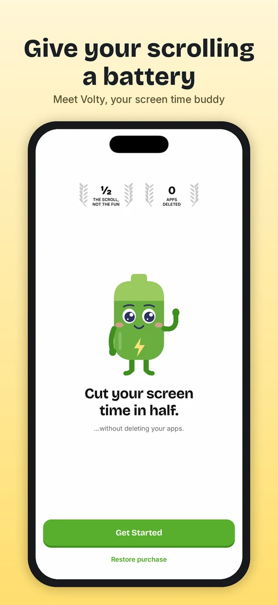

Phone and social media addiction: practical help
If you reach for your phone without thinking, lose evenings to feeds or feel restless without it, you are not weak. Many apps are designed to keep you scrolling. The good news: small changes to your setup often help more than guilt.
Signs it is taking over
- Your phone is the first thing you check in the morning and the last thing at night.
- “Just a minute” regularly turns into an hour.
- You have tried to cut back and slipped back quickly.
What helps
- Notice when and where you scroll most.
- Add friction: move tempting apps off your home screen and turn off notifications you don’t need.
- Give the apps that pull you in a fixed budget instead of relying on willpower.
- Fill the gap with something offline you enjoy.
- Talk to someone. If your phone use hurts your sleep, work or relationships, a doctor or therapist can help.
How ScrollVolt supports you
ScrollVolt gives the apps you choose one shared scroll battery. It drains while you use them and refills on its own over the day: a clear limit, not a total ban. Unlocking means dragging the battery to the minutes you want, and at zero a calm shield screen appears instead of the app. Volty, your battery buddy, keeps it a friendly nudge rather than a lecture.


Frequently asked questions
Is ScrollVolt a treatment for addiction?
No. It is a self-help tool that makes your limits easier to keep. If your phone use feels out of control, please talk to a professional.
Do I have to give up social media?
No. You decide which apps get a battery and how many minutes to unlock.
What happens to my data?
It stays on your iPhone. ScrollVolt uses Apple’s Screen Time frameworks and has no account, no tracking and no ads.
Try ScrollVolt on your iPhone
ScrollVolt Premium is a yearly subscription that starts with a 3-day free trial, and you can cancel any time in your Apple Account settings. Prefer to pay once? There is also a one-time Lifetime unlock.
Download on theApp Store